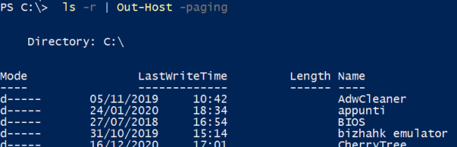

Out-Host (oh)
Out-Host (alias oh)If we want the output of a command as a stream of data (ascii, instead of objects), we can pipe it through the
Out-Host cmdlet (alias
oh).
We can paginate the output by using the -paging option, that work similar to the "more" command in cmd.exe or bash.
